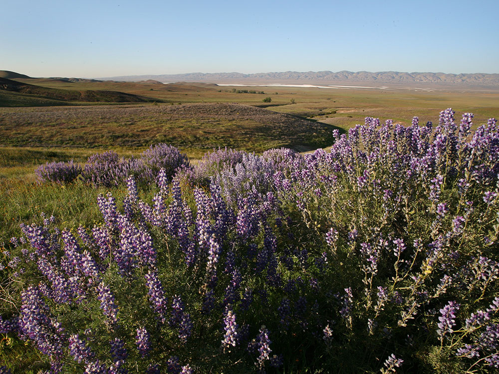
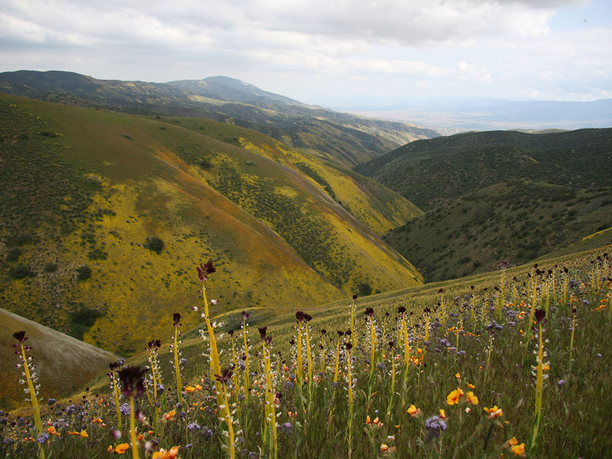
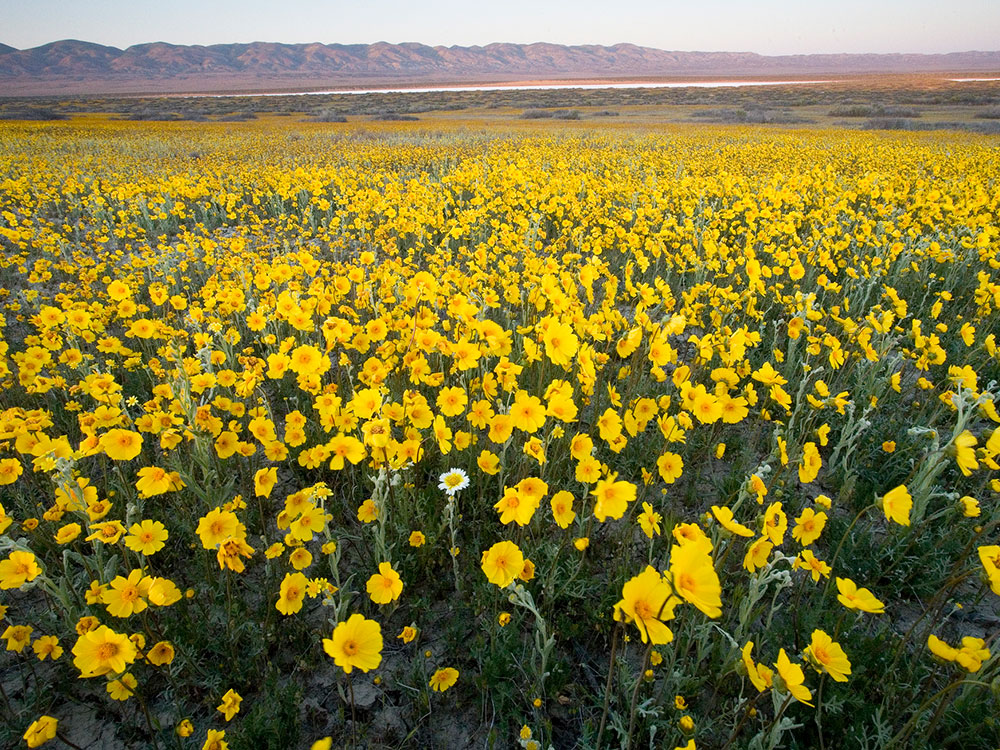
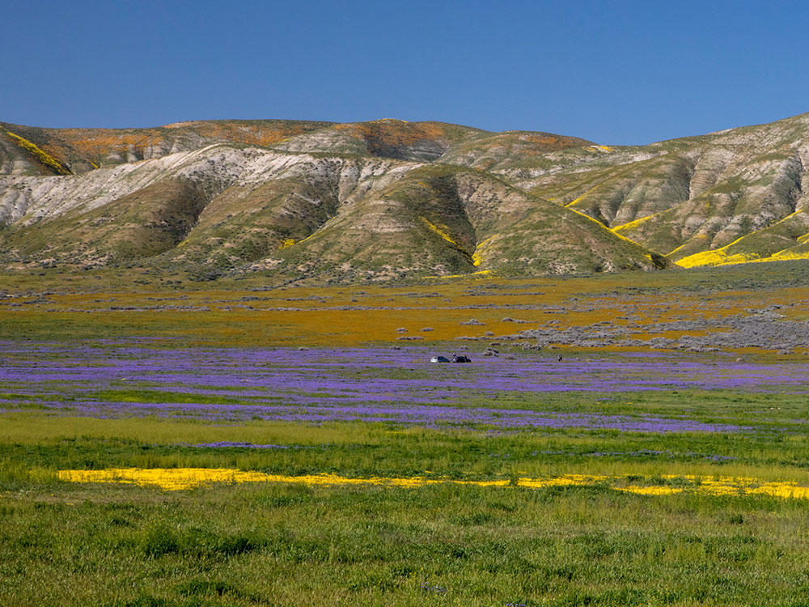

.jpg){kind=link}
Largest single native grassland remaining in California
General Information
Goodwin Education Center: Open December to May, Thursday to Sunday, 9:00 AM to 4:00 PM
Painted Rock tours: Free with reservation (small service fee may apply)
No permit required for general access
Allowed in most areas except Painted Rock exclusion zone
Owners must clean up after pets and never leave them unattended
Summer is hot and dry; winter can be cold with occasional frost
How to Get There
From San Luis Obispo, CA (76 mi): Take US-101 N to CA-58 E, then follow Soda Lake Road south into Carrizo Plain National Monument.
Overview
Carrizo Plain National Monument is a 246,812-acre grassland and the largest native grassland remaining in California. Set between the Temblor and Caliente ranges, it was protected as a national monument in 2001 to preserve its rare grassland habitat, which shelters endangered species such as the San Joaquin kit fox and giant kangaroo rat, along with pronghorn and tule elk. The monument is also a showcase of geology and history: the San Andreas Fault runs through the plain and is easy to see at Wallace Creek, while Painted Rock holds Native American rock art. Visitors come for the wide-open landscape, the shimmering white expanse of Soda Lake, and the spectacular wildflower “superblooms” that follow wet winters.
Access
The monument is in a remote part of San Luis Obispo County, about 100 miles northwest of Los Angeles and 76 miles east of San Luis Obispo. Most visitors arrive by car from the west via CA-58 and paved Soda Lake Road, which runs the length of the plain and becomes gravel in its southern half. The Goodwin Education Center, the main information point, sits just off Soda Lake Road. There is no public transportation, cell service is spotty and no gas, food or water is sold in the monument, so arrive with a full tank and plenty of supplies. High-clearance vehicles are helpful on the side roads, and gravel roads can become impassable when wet.
Seasons
Spring is the most popular season. In wet years the plain bursts into color from late March to early May, with fields of goldfields, tidy tips, hillside daisies and other wildflowers, and green hills are at their best before the heat arrives. Summer is hot, dry and exposed, with little shade, while winter brings cold mornings, occasional frost and rain that can turn dirt roads to mud. Fall and winter are quieter, and winter water can fill Soda Lake and attract migratory birds, including sandhill cranes. Access to Painted Rock is seasonal and by reservation to protect nesting wildlife, and the Goodwin Education Center is open only December through May.
Things to Do
Chase the Wildflower Superbloom
In years with ample rainfall, the monument's hills and valley floor turn yellow, orange and purple. Scenic drives along Soda Lake Road and the Temblor Range foothills are the easiest ways to see the bloom.
See the San Andreas Fault
At Wallace Creek, a stream channel has been offset by roughly 430 feet by centuries of fault movement, one of the clearest places in the country to see the San Andreas Fault's effects on the landscape.
Visit Painted Rock
This sandstone formation, shaped like a horseshoe, holds colorful pictographs created by Native American peoples. It is a sacred site and can be visited only on guided tours or by permission, so check the BLM website and reserve ahead.
Watch Wildlife and Stargaze
Pronghorn, tule elk, coyotes, kit foxes and many grassland birds live on the plain, and the remote location and dark skies make for excellent stargazing.
Top Trails
Soda Lake Overlook
Length: Less than 0.5 miles round trip
Elevation Gain: Minimal
Difficulty: Easy
A short boardwalk leads to a viewpoint above Soda Lake, the largest alkali wetland in Southern California, where the dry lakebed appears white when the water evaporates.
Wallace Creek Interpretive Trail
Length: Approximately 1 mile round trip
Elevation Gain: Minimal
Difficulty: Easy
An interpretive trail follows signs explaining the fault offset along Wallace Creek, with views toward the Temblor Range.
Painted Rock Trail
Length: Approximately 1 mile round trip
Elevation Gain: Minimal
Difficulty: Easy
This short walk leads to the Painted Rock pictograph site and requires advance reservations or a guided tour during the spring nesting season.
Visitor Centers
The Goodwin Education Center on Soda Lake Road is the monument's main visitor facility. It offers exhibits on the plain's geology, wildlife and cultural history, along with staff and volunteers who can share road conditions and bloom updates, and it is open Thursday through Sunday from December to May. The center is the best place to stop before exploring, since services elsewhere in the monument are essentially nonexistent.
Camping and Lodging
Camping in the monument is primitive. Selby Campground on Soda Lake Road offers basic sites with pit toilets but no water or hookups, and dispersed camping is allowed in designated areas. For motels and hotels, the closest options are in Santa Margarita and Atascadero, about an hour away, while San Luis Obispo and Paso Robles have the widest selection of hotels, inns and restaurants within about 1.5 to 2 hours. Taft and Bakersfield to the east also offer lodging for visitors approaching from the Central Valley.
This article uses material from the Wikipedia articles "Carrizo Plain" and "Painted Rock (San Luis Obispo County, California) ", which are released under the Creative Commons Attribution-Share-Alike License 3.0. Additional information from the Bureau of Land Management.

.jpg){kind=link}

.jpg){kind=link}

.jpg){kind=link}

.jpg){kind=link}